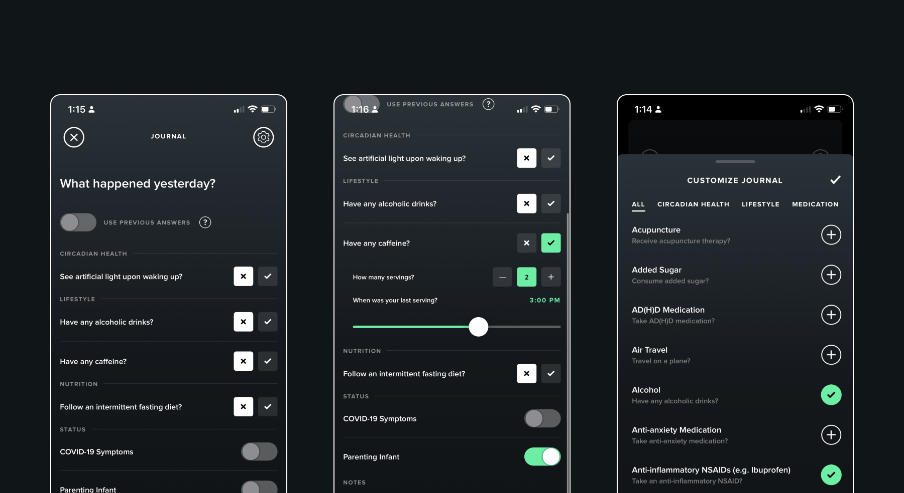
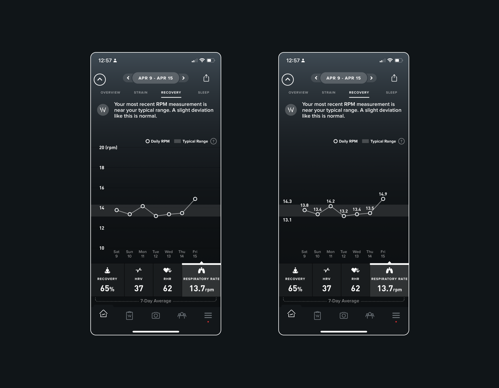
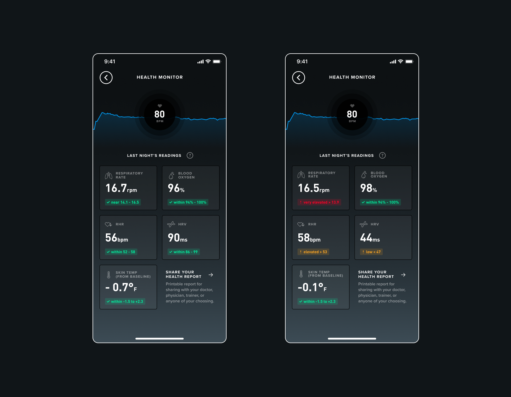

This story is about how good architectural decisions and learning through experimentation can yield innovative outcomes. Also, I think its just a cool product development story!
← Back to Home
By the Summer of 2021, WHOOP launched the Health Monitor which represented a key shift in the way members would to consume biometric data. Historically, the lens on key WHOOP data points had been focused on fitness and training for athletic events. Shifting to a health oriented context stemmed from 2 key trends within the WHOOP member base:
This story is about how good architectural decisions and learning through experimentation can yield innovative outcomes. Also, I think its just a cool product development story!
Late 2019 we set out to create a new feature, which eventually became what was known as the WHOOP Journal. The purpose of the WHOOP Journal was to collect behavioral information, such as bedtime rituals, lifestyle choices (e.g. drinking alcohol), and various Recovery modalities to help members understand their impact to Sleep and Recovery data. Members had often cited wanting to understand what actually impacts their Recovery. The WHOOP Journal was the input mechanism to deliver this analysis.
While designing the WHOOP Journal, the question of extensibility came to mind. What would members want to track? How many behaviors would members want to track? How might we react when members request certain behaviors not provided within the Journal. It’s worth noting that we made the decision to curate a library of behaviors instead of making the Journal completely customizable to allow for big data studies across the member base (e.g. common behaviors across members can be studied). This was key. User research helped us forecast the types of behaviors as well as the manner in which we could update the journal library on the fly.
This architecture ending up coming in handy especially in March of 2020; we decided to add “COVID-19 Symptoms” as a journal behavior and made it accessible to all members. Sure enough members began reporting experiencing COVID-19 symptoms. We also leveraged a simple Typeform survey integration to gather additional data points such as COVID-19 test results, severity of symptoms, etc. This was critical for data science research.
The WHOOP Journal containing the 'COVID-19 Symptoms' state.
Armed with a significant set of biometric and behavioral data, the Data Science team was off looking for any and all insights. Did COVID-19 affect Sleep? How did COVID-19 affect cardiovascular health? Were certain demographic cohorts affected more than others? At first, the team wasn’t quite sure what to look for, but had a lot of data to explore.
The results of their study were fascinating. In turns out that there was a strong correlation between a metric called Respiratory Rate and those who reported testing positive for COVID-19. Specifically, Respiratory Rate would spike days before the member would cite having COVID-19 Symptoms. This insight was profound because Respiratory Rate was a historically irrelevant metric; it never really fluctuated. We hadn’t really even displayed the metric in the mobile apps. Until now.
The first design challenge was figuring out how to build this metric into the product. While working with the Data Science team we learned that when someone’s Respiratory Rate deviates significantly from their historical baseline for several days in a row, there is a significant chance they had contracted COVID-19. However, this was not a diagnosis, so the product experience needed to help members monitor their Respiratory Rate instead of, for example, providing “COVID-19 Detection”.
The design solution we landed on incorporated 3 key elements:
Fortunately these components existed within the product for other metrics, so we were able to quickly write the coaching logic, build the feature, and launch it.
A trend of Respiratory Rate values. Tapping displays value labels.
After launching the Respiratory Rate trend, we found that members viewed this trend at a much higher frequency (per week) than other trends. This was a good first sign. During member interviews we also learned that checking the trend ended up becoming another key morning ritual. Members would wake up, check Sleep, check Recovery, check Respiratory Rate, and then start their day. Members commonly cited seeking COVID-19 testing when experiencing spikes in their Respiratory Rate. In a world where many product companies were looking to provide something of value during the height of the pandemic, here was our contribution!
WHOOP made headlines when WHOOP member and pro golfer, Nick Wantey, sought out additional COVID-19 testing because he noticed an elevated Respiratory Rate. Despite testing negative previously, he eventually tested positive and then bowed out of the tour to distance himself from others. This likely prevented COVID-19 spreading to other staff and players on the tour. The PGA subsequently outfitted all staff and players with WHOOP bands. Pretty neat!
What we learned from this experience was that members relied on the product to tell them something important that they couldn’t feel on their own. This was evident in engagement metrics as well as anecdotes from members. This dynamic had already been the case with metrics like Recovery, but this feature demonstrated that this desire extended into the general health and wellness space as well.
From this insight, we ideated through additional experiences that aimed to help members consume additional biometric data in a similar fashion. The concept was “help members gauge their health metrics at a glance”. From the Respiratory Rate trend design, we learned that the notion of a metric being in or out of range was intuitive to members. We took this insight and expanded upon it with additional metrics to create the Health Monitor.
The Health Monitor showing metrics that are in range (left) and out of range (right). View additional design sampes in Figma.